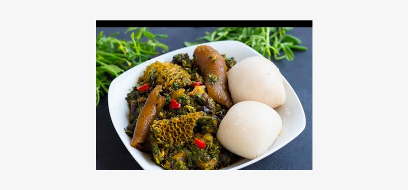

Pounded yam
Description
Pounded Yam is a staple in many West African homes, but it is not usually eaten by itself, it is often paired with many delicious African soups, and stews like Egusi, okra soup, Jute leaves soup (Ewedu), or Stewed Spinach (Efo Riro).
Ingredients
- Tubers of yam
- Mortar
- Pestle
- Cooking pot
- Water
- A kitchen knife
Steps
- Go ahead and peel off the brown outer layer of the yam, slice and wash the white part with lots of clean water.
- Transfer into a cooking pot and start cooking with just water. Be sure that the sliced yams are almost completely submerged in water.
- Cook for ten to fifteen minutes then check to see if the yams are soft enough for pounding, you can check with a kitchen fork by piercing. Once the yams are soft enough for pounding you are ready for the pounding part. Be sure that the water is not completely dried because you will need it while pounding the yam.
- Pick with a fork and transfer into a mortar then go ahead and pound with a pestle, pound until the yam is seedless and can easily be molded, you can add water and pound until you have a smooth soft pounded yam.
Note: You need to know that the yam used for the preparation of pounded yam must have stayed for at least three months on the surface, we don't use newly harvested yams for the preparation of pounded.
- Pounded yam in Nigeria is not served as a course meal but paired with a plate of Nigerian soups, it goes best with egusi, okro or bitter leaf soup.
Note: I am yet to figure out a way to preserve this food over twenty-four hours. So just pound only what you can consume within 12 hours.
Be sure that the water is not completely dried because you will need it while pounding the yam. Sometimes the yam gets very strong during pounding that you will need to add a little water while pounding, you can use ordinary water but the water left after cooking the yam is most suitable.